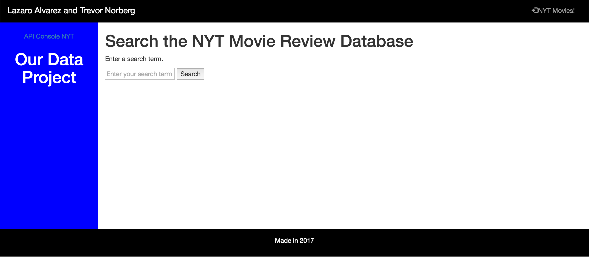

Movie Review Data Project
This app was designed by me and my partner, Lazaro. We designed it to retrieve data about movie reviews from the NYT database.
CTA Bus Tracker App
This app was designed to retrieve information about the buses that Lane students could use to get home. Three buses are featured on this app, making it convenient to Lane Tech students.

The Air Horner
This is a mobile app designed to make the sound of an airhorn, which can be triggered by clicking the button in the middle of the screen. It is a very loud sound that may be considered annoying.

Bar Graph: My Daily Life
This is a graph that I made to display the percentage of my time used at home.

Pie Chart: 1
This is a pie chart that I made to show the percentage of my time spent at home.

Pie Chart: 2
This a pie chart that I made to show the percentage of my time spent at home. This pie chart is a little fancy, however.